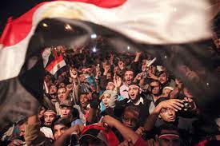
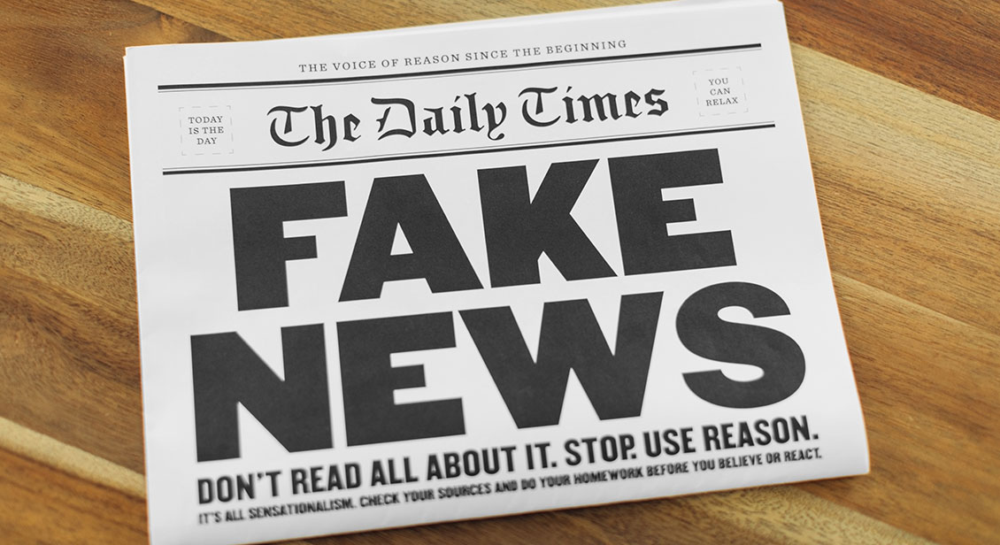

How does the internet have political consequences?
Vi bruker mange timer daglig på sosiale medier, noe som påvirker vår atferd og vår forståelse av livsmiljøet vi lever i
det har gjort at sosiale nettverkssider har blitt et verktøy som bringer oss sammen og endrer noen skikker, lover og til
og med statlige retningslinjer. Dette gjør det mulig for enkeltpersoner eller grupper til å få frem sine politiske meninger.
For eksempel spilte dette en nøkkelrolle i den arabiske våren.I Egypt brukte demonstranter Facebook til å
dele sine synspunkter med hverandre og samles på Tahrir-plassen, for å endre statens politikk som førte til styrten av daværende statsoverhode, Hosni Mubarak.

Som man ser har internett gitt muligheten til at flere i samfunnet kan ta til stilling til politiske spørsmål og dermed
få muligheten til få frem budskapet sitt og dette har både gitt positive og negative konsekvenser.
De negative sidene med det er at borgerne blir misinformert eller som Donald Trump kalte det «fake news» og det gjør at befolkning stemmer på grunnlag av feilinformasjon.

På lenken under kan du lese mer om saken:
TRUMP OG FAKE NEWS
What are the societal responsibility of innovators?
Setningen “The person who invented the train invented the train crash” er et eksempel på en innovasjon som har
vært revolusjonerende for transport av varer og mennesker, men som også har ført til fatale konsekvenser.
En kan trekke paralleller til andre innovasjoner som for eksempel smarttelefonen, el-sparkesykkel, sosiale medier etc.
De fleste slike oppfinnelser har som oppgave å være praktisk og positivt
innflytende på global basis, men det vil alltid følge konsekvenser av disse innovasjonene som f.eks dødsulykker samt andre fysiske og psykiske problemer.
Sosialt ansvar bør være et rammeverk for innovatører og oppfinnere, som gjør at arbeidet og samarbeidet de utfører, må være til nytte og det beste for fellesskapet.
Det er flere aspekter i hvordan sosialt ansvar kan være i samspill for teknologien, som for eksempel økonomisk, politisk og miljøvennlighet.
I sosiale medier ser vi de positive virkningene av et mer globalisert samfunn og hvordan f.eks. Mark Zuckerberg oppfant Facebook. Målet med Facebook var å få kontakt og
oppdatering fra/med de nærmeste fra hånden, men ettervirkningene har ført til psykiske problemer, redselen av å gå glipp av en hendelse og sjalusi.
Det beste er å forebygge problemer og videreutvikle problemstillinger som allerede oppstår. For el-sparkesykkelen, så ser vi allerede en løsning
som involverer juridisk og materiell påvirkning. For å hindre skader, så er det innført fartsgrense, ulovlig promillekjøring
og påbudt hjelm for barn under 15 år. For å redusere antall bilulykker på grunn av mobilbruk, har staten økt boten fra et par tusen kroner.
Vi ser fort at det ofte er konsekvenser bak et prosjekt med gode hensikter. Likevel er det viktig å forebygge dette, utvikle flere ideer,
og så lenge ideene kommer med gode hensikter og har flere gode sider enn dårlige sider vil man kunne utnytte disse innovasjonene til tross for det negative.
Mer om lovene kan du lese på Vegvesen sin offisielle nettside:
TRYKK HER